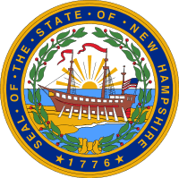
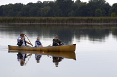
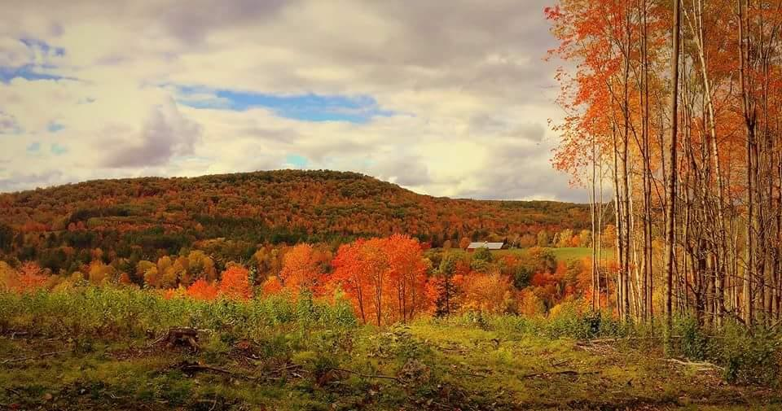

<section id="home-main">
    <div class="home-info">
      <div class="buy-land">
        
        <h2>Live Free and Buy Land!</h2>
      </div>

      <div class="home-text">
        
        <h3>We make buying our land easy with up to 90% owner
          financing* and rates as low as 5.95%</h3>
        <p>Our land specialists understand real estate. We have over 21 years experience
          helping people find that special piece of New Hampshire or Maine land. At Northern
          Acres we make buying land easy and affordable. We offer owner financing*, allowing
          you to purchase property with only 10% down.Our knowledge of New Hampshire
          and the White Mountains is unsurpassed. Whether you desire a mountain view,
          a roaring brook, or a cascading waterfall, we can match you with your dream
          property.</p>
      </div>

      <div class="home-text">
        
        <h3>Do you long for a quiet retreat away from the hustle and bustle?</h3>
        <p>We can help you discover a place to relax and enjoy the outdoors. Perhaps
          you're looking to find land near your favorite ski resort or build your own
          cozy log cabin in the woods. We have properties located throughout New
          Hampshire and Maine and all are guaranteed buildable. Whether it's a modest
          place to retire, a grand vacation home or a family retreat, we have the
          right property to meet your needs.</p>
      </div>

      <div class="home-text">
        
        <h3>Looking to purchase land in the NH White Mountains?</h3>
        <p>
          The New Hampshire White Mountains is a desirable vacation destination
          and provides abundant recreational opportunities for every season. You
          and your family can:
          fish, canoe, hike, ski, snowboard, climb, golf, or simply relax and
          enjoy the beautiful mountain views!
          <br>
          Perhaps you'd like to build right away, or purchase real estate for
          future use, or maybe you haven't even decided what you want to do yet.
          Whatever the reason, our land specialists have walked 100 percent of
          all our properties and can help you find the right match.
        </p>
      </div>
    </div>